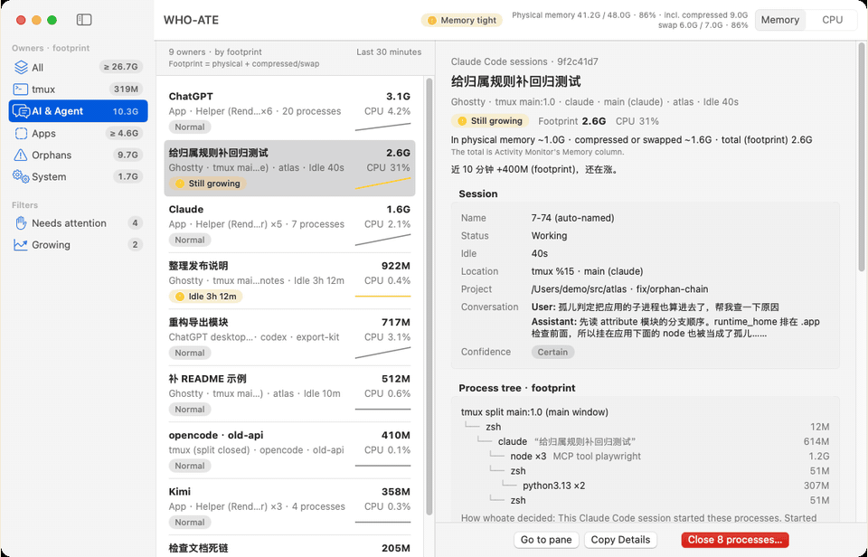
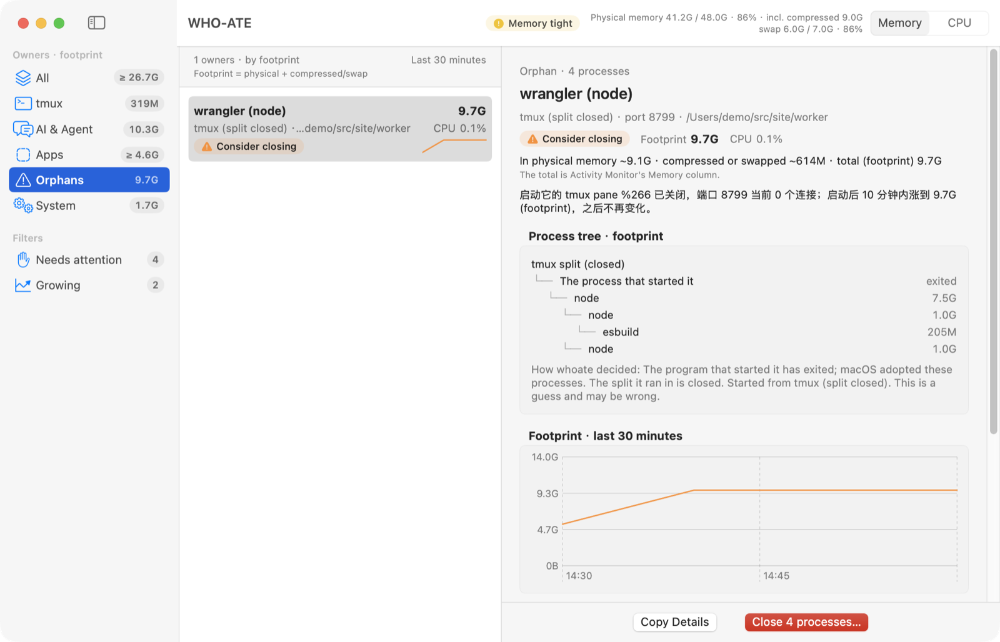
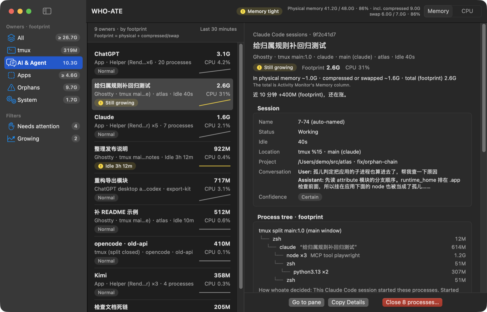
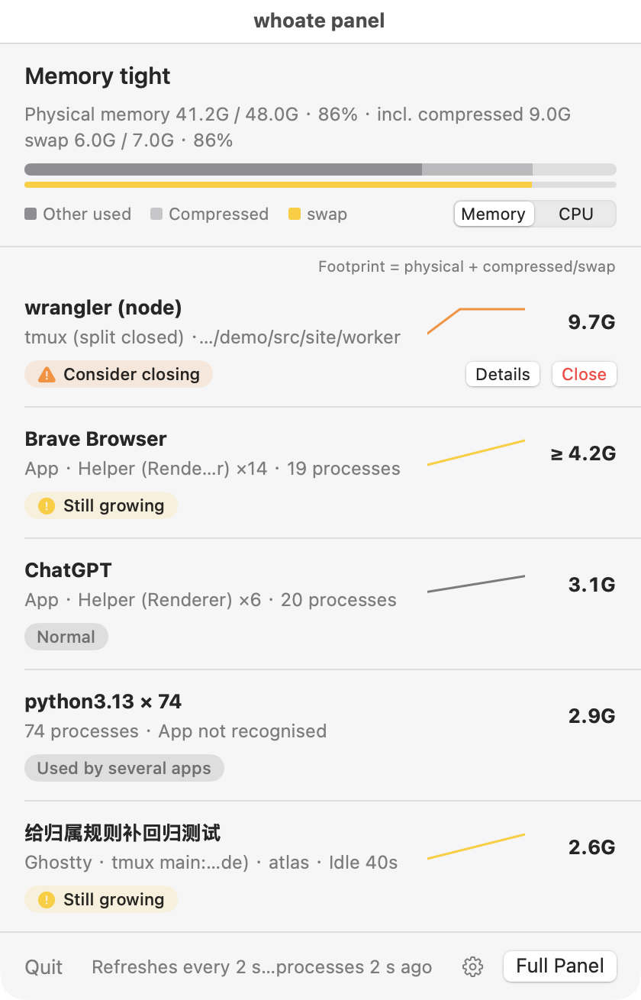
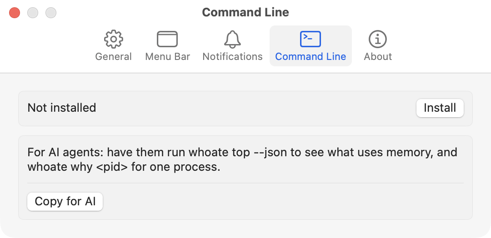

Who ate my RAM?
See which agent session, tmux pane or app is eating your Mac's memory — and let your coding agent ask too. whoate groups processes by who started them, finds the orphans closed terminals left behind, and answers agents in JSON for zero tokens.
brew install zhenninglang/tap/whoate
Per-software insight
It knows how each app splits into processes, and says so in that app's terms.
Activity Monitor lists processes. whoate groups them by who started them and why they exist, using recognizers for the software developers actually run, then adds advice from a knowledge base where every entry cites its source.
| Software | What the process list shows | What whoate says |
|---|---|---|
| Coding agents | node, node, npx, python3, uv … | Claude Code session · Ghostty · tmux main:1.0 · atlasListed under AI & Agent, with its MCP servers (here playwright) and child processes grouped under the session, its title and idle time. |
| Chrome, Brave | Google Chrome Helper (Aperitif Renderer) × 32 | Tab processes · Extensions · GPU · Network servicePlus whether Memory Saver is on, read from the browser's own preferences. |
| Docker Desktop | com.apple.Virtualization.VirtualMachine | The Linux VM, with per-container statisticsContainer figures stay separate: they are never added to the VM's footprint. |
| VS Code, JetBrains | Code Helper (Plugin), node, java … | Extension hosts · TypeScript language server · file watchersPlus the settings that drive them, such as watcher exclusions or the JVM heap from your vmoptions. |
| Closed terminals | node (ppid 1) | Orphan from a pane that no longer existsWith the evidence, and a two-step close that never touches system processes. |
Run whoate insights --list to see every knowledge-base entry with its source and the date it was checked. Add your own names and advice in ~/.config/whoate/rules.toml.
Made for agents · zero tokens
One command, structured JSON, meaningful exit codes.
Your coding agent asks whoate instead of guessing from ps. Diagnosis is rule-based and runs on your Mac: no model calls, no network, no tokens spent.
$ whoate why 41873 --json # trimmed example { "schema": "whoate/v1", "owners": [{ "id": "app:com.google.Chrome", "label": "Google Chrome", "mem_bytes": 3221225472, "parts": [ { "name": "Tab processes", "process_count": 14 }, { "name": "Extensions", "process_count": 5 } ], "insights": ["chrome.extensions"], "verdict": { "level": "watch" } }] }
- A schema, not proseEvery document says
"schema": "whoate/v1". Memory is in bytes,nullmeans unknown, never zero. - Exit codes an agent can branch on
0 normal 1 something needs action, or a fatal error 2 invalid arguments 3 target not found 4 refused for safety - Safe by defaultConversation text stays out unless you pass
--prompts.whoate killpreviews first and refuses root and Apple system processes. - Instructions included
whoate agent-guideprints a SKILL.md for Claude Code, Kilo or OpenCode.
The menu bar app
For people: owners ranked, verdicts in plain language.
The same engine behind a menu bar panel, a three-column window and a settings window, in light and dark, English and Chinese. The left column's numbers are footprint: physical memory plus compressed or swapped memory, so owners can add up to more than your RAM. Each row starts with where it was launched from, such as Ghostty · tmux main:1.0.




Install
Apple Silicon, macOS 14 or later.
Command line
brew install zhenninglang/tap/whoateThen whoate top. The JSON Schema is installed under $(brew --prefix)/share/whoate/.
Menu bar app
brew install --cask zhenninglang/tap/whoateOr download the app zip from Releases. The app carries the CLI too: Settings → Command Line → Install. Update with brew upgrade; the app never checks online.
First launch
The app is not notarized (that needs a paid Apple Developer account), so macOS blocks the first launch once:
- Open whoate.app and click Done in the warning.
- Open System Settings → Privacy & Security and click Open Anyway next to the whoate message.
- Confirm with your password or Touch ID.
Or run xattr -d com.apple.quarantine /Applications/whoate.app.
中文说明：谁吃了我的内存？
看清是哪个编程助手会话、哪个 tmux 分屏、哪个应用在吃 Mac 的内存，也让你的编程助手自己来查。和活动监视器的不同：按会话、分屏、应用归属，而不是一串进程名；能看出终端关掉后留下的孤儿进程；给 agent 用的命令行输出 JSON 和退出码，零 token。应用左栏有「AI & Agent」一类，数字是占用（物理内存 + 压缩/swap）。
按软件定制的洞察：按各个软件自己的结构解释进程，建议来自内置知识库，每条都附出处与核对日期。给 agent 用，零 token：一条命令输出结构化 JSON 和有含义的退出码，诊断在本机按规则完成，不调用模型、不联网。
安装：brew install zhenninglang/tap/whoate（菜单栏应用加 --cask）。应用未做 Apple 公证，首次打开被拦下时，打开「系统设置 → 隐私与安全性」，点「仍要打开」，或执行 xattr -d com.apple.quarantine /Applications/whoate.app。